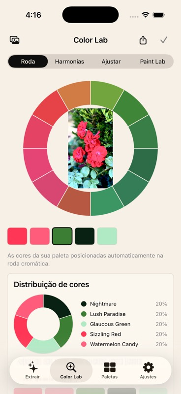

Import a photo
Choose a reference image and build your study around it while preserving the original photo.
An iOS app for artists
Color studies for painting.
Palettes, harmonies, and painting studies from your reference photos.

Creative workflow
Choose a reference image and build your study around it while preserving the original photo.
Extract colors automatically or sample them manually, then adjust light, contrast, temperature, hue, highlights, shadows, vibrance, and clarity.
Open Color Lab and Paint Lab to compare harmonies, color distribution, visual mixes, and color appearance over painting grounds.
Color Lab
Color Lab places image colors on a color circle, highlights harmonies, shows approximate color distribution, and lets you explore variations while preserving your original palette.


Paint Lab
Explore how a color looks over a white canvas, grays, earth tones, warm painting grounds, or custom colors. These educational previews help you anticipate color shifts, brightness, and contrast before putting real paint on canvas.
Made for the studio
Photos, palettes, adjustments, color names, and labs stay on your device in this version.
Your original photo and base colors stay intact. Previews and experiments build on your saved adjustments.
Export your palette, edited photo, Color Lab, or Paint Lab studies to use while you paint.
Download
Artist Lab is coming to the App Store. The download link will appear here when the app is available.